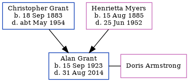

Alan Grant 1923 - 2014
[ Home ] | [ Calendar ] | [ Surnames Index ] | [ Errors ] | [ Family History ]An apprentice marine fitter and the youngest of 4 children of Christopher Grant (a ships boilermaker & plater) and Henrietta Myers, Alan Grant was born in Tynemouth, Tyne and Wear, England on 15 Sept 19231,2,3. He married Doris Armstrong in Tynemouth around Nov 19474. On 29 Sept 1939, he was living at 4 Coast Road in Tynemouth1.
He died on 31 Aug 2014 in Wallsend, Tyne and Wear, England3.
Parents
- Christopher James was born on 18 Sept 1883
- Henrietta Briscoe Nicholson was born on 15 Aug 1885
Citations
- 1939 Register - Findmypast (was the son of the head of the household)
- England & Wales births 1837-2006 - Findmypast
- United Kingdom Deaths - Findmypast
- England & Wales Marriages 1837-2005 - Findmypast
Media
England & Wales births 1837-2006 - BMD/B/1923/4/AZ/000497/055
England & Wales marriages 1837-2005 - BMD/M/1947/4/AZ/000556/071
Family Tree
Map
Generated by ged2site. Last updated on Jul 3, 2024
Known Issues
Can't find relationship with the home person